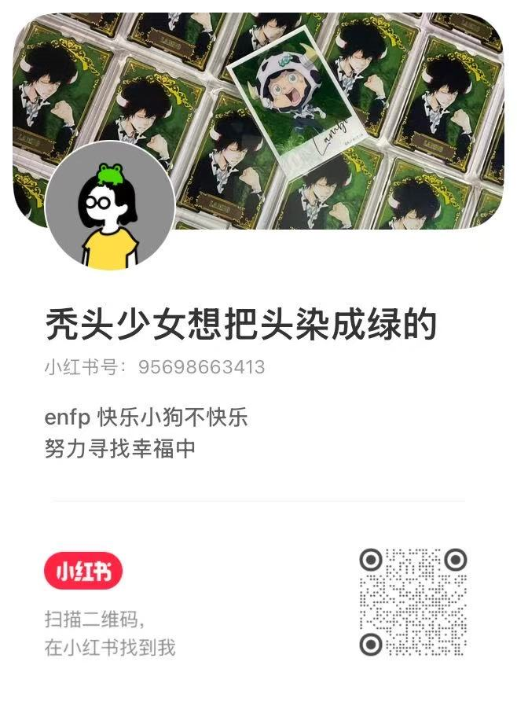

我热爱的
表达自己、观察世界、探索未知，把模糊的情绪慢慢说清楚。
四圈模型：我站在哪个交叉点
表达自己、观察世界、探索未知，把模糊的情绪慢慢说清楚。
洞察关系、捕捉细微感受，把复杂内容整理成摘要和路径。
让说不清的人也能表达，让信息变成可以学习、复述和行动的东西。
AI 学习工具、表达辅助产品、知识管理工作流和小型自动化工具。
帮助那些心里有很多东西、但不知道怎么说出来的人，把想法、情绪、资料和标签整理成可以表达、可以学习、可以继续探索的东西。
六个问题帮我起步
表达、观察、总结，给混乱的信息和情绪找结构。
hate 标签连接器、document-to-study-summary、wego-shell。
文档总结、AI 工具使用、工作流设计、观察和命名。
敏感、有洞察，能看到别人没说出口的东西。
从零散信息里抓重点，把模糊想法变成更准确的话。
看到复杂的人被简单贴标签，或表达不顺被误解成没有想法。
我想努力表达自己对这个世界的看法：我来到这世上，是为了看看太阳。
不是每一句话都会顺利抵达，但每一次认真说出来，都是一次重新开始。
先写那些卡在喉咙里、但我一直想说清楚的东西。表达困难不是缺陷，它本身就是我的入口。
每个正在做的工具，都是一个可以持续展开的内容母题。写它为什么存在、解决什么、哪里还笨拙。
看见世界如何误解表达、标签和工具，再回到自己的角度。不是追热点，是找到它和我真正有关的那一面。
一个选题要同时满足：我有真实体感、能帮助别人说清楚一点、和我的项目或长期观察有关、发之前有“这个值得讲”的感觉。
今天的页面其实已经长出了一套方法：不是强迫自己马上说漂亮的话，而是先承认笨拙，再把笨拙拆成能处理的步骤。
表达不是一次性抵达。它更像一次次 Reset：看见一点，连接一点，说出来一点。
先捕捉让我停下来的东西：情绪、标签、问题、误解、太阳，或者某个想说但没说顺的瞬间。
把它和自己的经历、正在做的项目、手边的资料连起来，找到它为什么和我有关。
不追求完美，先变成一句话、一篇摘要、一个标签连接器、一个 shell 入口，或者一封邮件。
我现在做的不是孤立的小工具，而是一套围绕表达展开的系统：先把情绪和标签连起来，再把资料变成学习路径，最后把重复动作收进 shell 里的日常入口。
目标很简单：让心里有很多东西的人，可以更轻一点地把自己讲出来。
把散落的情绪、标签和关系重新连起来，看看一个标签背后真正指向哪里。
把文档变成可学习的摘要，让信息不只是被存放，而是真的被消化和带走。
在 shell 里慢慢打磨工作流，把零散命令、重复动作和小工具收进一个顺手入口。
把说不顺的想法、资料和标签先放进来。
找到情绪、概念、文档和行动之间的关系。
把混乱内容变成摘要、路径和可复用模板。
用更准确的话、更顺手的工具，再试一次。
